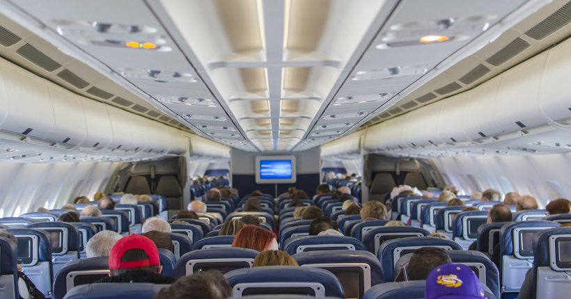

Curiosidades sobre aviões
Postado em 9 de Julho de 2021
 1. Bagagens perdidas e não reclamadas são doadas ou leiloadas
1. Bagagens perdidas e não reclamadas são doadas ou leiloadas
Quase 2 milhões de bagagens despachadas em aviões são perdidas todos os anos no mundo. A grande maioria é recuperada. Outras não são encontradas e o passageiro recebe uma indenização da companhia aérea. Mas, uma parte das bagagens não é reclamada, ou não tem proprietário identificado. Nestes casos, no Brasil, as empresas fazem uma doação para instituições beneficentes. Nos Estados Unidos e em alguns países da Europa as malas sem dono são leiloadas. Portanto, se você tinha uma mala que nunca mais viu, provavelmente foi esse o destino dela…
 2. É difícil calcular a duração exata de uma viagem
2. É difícil calcular a duração exata de uma viagemExistem diversas variáveis que influenciam no tempo de voo, como distância, altitude, tipo de aeronave, clima (especialmente a direção dos ventos) e o tráfego aéreo nos aeroportos de saída e chegada e ao longo do trajeto. Por melhor que seja a previsão, não é incomum acontecerem eventos não esperados. Por isso, as companhias aéreas geralmente utilizam um software para calcular o tempo de viagem, mas sempre adicionam uma margem de segurança para contingências (que pode chegar a 20% do tempo total estimado), evitando assim atrasos em cascata na programação dos voos. Mas nada como uma tempestade inesperada, um passageiro atrasado, ou uma manutenção de última hora na aeronave para fazer com que o voo atrase assim mesmo.
 3. Pernas podem inchar durante voos mais longos
Se você passar mais de duas horas voando, pode notar que seus pés, tornozelos e pernas se expandiram. Em alguns casos, o inchaço é bem visível. E isso são sintomas comuns da mudança na pressão do ar e de uma menor hidratação do corpo, especialmente se você ficar sentado durante muito tempo, sem se movimentar durante a viagem. Por isso, o ideal é utilizar calçados e roupas confortáveis e leves durante viagens longas. Andar um pouco no avião, movimentar os pés e as pernas mesmo sentado e beber bastante água também ajuda muito, não só a reduzir o inchaço, mas também a prevenir tromboses.
4. O rastro branco deixado pelos aviões nos céus é chamado de trilha de condensação
Aquelas faixas brancas no céu, que ficam depois que um avião passa em elevada altitude, são chamadas de trilhas, rastros ou esteiras de condensação (contrail, em inglês). Isso acontece porque o avião libera vapor da combustão do motor, que se mistura com a atmosfera ao redor, muito mais fria e úmida devido à elevada altitude, deixando uma nuvem fina de cristais de gelo que demora a se dissipar.
Veja Todas as 11 Curiosidades em: Melhores Destinos